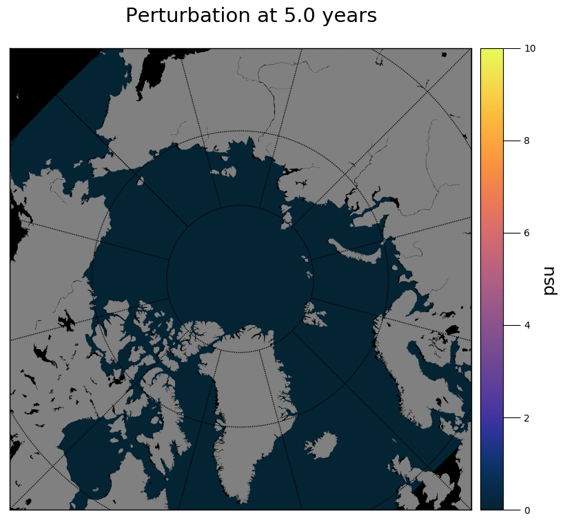

Submarine Landslides
Submarine landslides are some of the biggest geological events observed on the surface of Earth. They can be orders of magnitude greater than subaerial landslides and can generate disastrous tsunamis.
Submarine Landslides and their effect on climate
During my PhD I developed a novel technique to simulate the spreading of submarine landslides in the ocean and their effect on the ocean circulation. This was done using the MITgcm general circulation model. My personal github repository contains a suite of python scripts for the analysis of the results as well as a collection of notebooks with my analysis. Here is a low-res version of my thesis.
Modelling submarine landslides
Here are some results of the simulation on submarine landslide. These simulation model the Storegga Slide, the biggest landslide mapped on the surface of Earth. This slide failed 8000 years ago offshore the coast of Norway. It ganerated a major tsunami whose traces have been mapped all over the North Atlantic.
Perturbation

When the slide is released it spread all over the Nordic Seas, and made its way in the Arctic infillin part of the Arctic Ocean abyssal plane.
Sea level

Ocean models